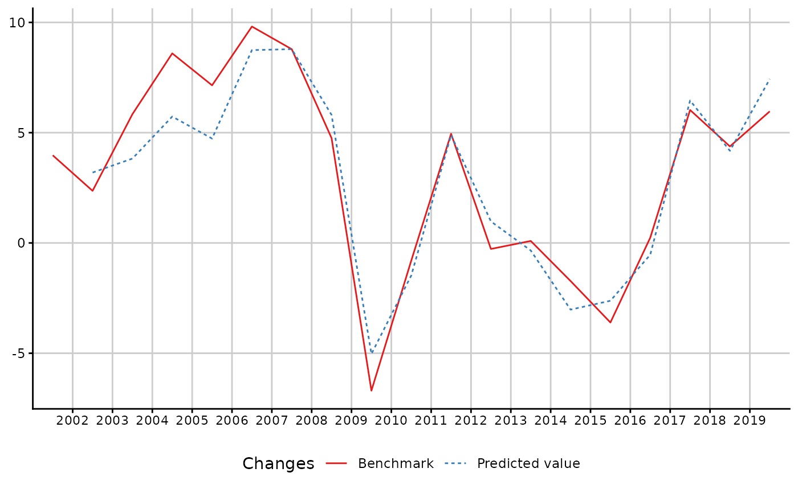

Regress and bends a time series with a lower frequency one
Source:R/twoStepsBenchmark.R
twoStepsBenchmark.RdtwoStepsBenchmark bends a time series with a time series of a lower frequency. The procedure involved is a Prais-Winsten regression, then an additive Denton benchmark.
Therefore, the resulting time series is the sum of a regression fit and of a smoothed part. The smoothed part minimizes the sum of squares of its differences.
The resulting time series is equal to the low-frequency series after aggregation within the benchmark window.
Usage
twoStepsBenchmark(hfserie,lfserie,include.differenciation=FALSE,include.rho=FALSE,
set.coeff=NULL,set.const=NULL,
start.coeff.calc=NULL,end.coeff.calc=NULL,
start.benchmark=NULL,end.benchmark=NULL,
start.domain=NULL,end.domain=NULL,outliers=NULL,
...)
annualBenchmark(hfserie,lfserie,
include.differenciation=FALSE,include.rho=FALSE,
set.coeff=NULL,set.const=NULL,
start.coeff.calc=start(lfserie)[1L],
end.coeff.calc=end(lfserie)[1L],
start.benchmark=start(lfserie)[1L],
end.benchmark=end.coeff.calc[1L]+1L,
start.domain=start(hfserie),
end.domain=c(end.benchmark[1L]+2L,frequency(hfserie)),
outliers=NULL)Arguments
- hfserie
the bended time series. It can be a matrix time series.
- lfserie
a time series whose frequency divides the frequency of
hfserie.- include.differenciation
a boolean of length 1. If
TRUE,lfserieandhfserieare differentiated before the estimation of the regression.- include.rho
a boolean of length 1. If
TRUE, the regression includes an autocorrelation parameter for the residuals. The applied procedure is a Prais-Winsten estimation.- set.coeff
an optional numeric, that allows the user to set the regression coefficients instead of evaluating them. If hfserie is not a matrix, set.coeff can be an unnamed numeric of length 1. Otherwise,
set.coeffhas to be a named numeric, which will set the corresponding coefficients instead of evaluating them. Each column name of hfserie and each outlier set with theoutlierarg initialize a coefficient with the same name, that can be set through set.coeff. The default name for a non-matrix time series is then"hfserie", By example, a LS2003 and the time series can be set usingset.coeff=c(hfserie=3,LS2003=1).- set.const
an optional numeric of length 1, that sets the regression constant. The constant is actually an automatically added column to
hfserie. Usingset.constant=3is equivalent to usingset.coeff=c(constant=3).- start.coeff.calc
an optional start for the estimation of the coefficients of the regression. Should be a numeric of length 1 or 2, like a window for
lfserie. If NULL, the start is defined by lfserie's window.- end.coeff.calc
an optional end for the estimation of the coefficients of the regression. Should be a numeric of length 1 or 2, like a window for
lfserie. If NULL, the end is defined by lfserie's window.- start.benchmark
an optional start for
lfserieto bendhfserie. Should be a numeric of length 1 or 2, like a window forlfserie. If NULL, the start is defined by lfserie's window.- end.benchmark
an optional end for
lfserieto bendhfserie. Should be a numeric of length 1 or 2, like a window forlfserie. If NULL, the start is defined by lfserie's window.- start.domain
an optional for the output high-frequency series. It also defines the smoothing window : The low-frequency residuals will be extrapolated until they contain the smallest low-frequency window that is around the high-frequency domain window. Should be a numeric of length 1 or 2, like a window for
hfserie. If NULL, the start is defined by hfserie's window.- end.domain
an optional end for the output high-frequency series. It also defines the smoothing window : The low-frequency residuals will be extrapolated until they contain the smallest low-frequency window that is around the high-frequency domain window. Should be a numeric of length 1 or 2, like a window for
hfserie. If NULL, the start is defined by hfserie's window.- outliers
an optional named list of numeric vectors, whose pattern is like
list(AO2008T2=c(0,0,3,2),LS2002=c(0.1,0.1,0.1,0.1))where :"AO"stands for additive outlier or"LS"for level shiftThe integer that follows stands for the outlier starting year
an optional integer, preceded by the letter T, stands for the low-frequency cycle of the outlier start.
The numeric vector values stands for the disaggregated value of the outlier and its length must be a multiple of hf / lf
The outliers coefficients are evaluated though the regression process, like any coefficient. Therefore, if any outlier is outside of the coefficient calculation window, it should be fixed using
set.coeff.- ...
if the dots contain a cl item, its value overwrites the value of the returned call. This feature allows to build wrappers.
Value
twoStepsBenchark returns an object of class "twoStepsBenchmark".
The function summary can be used to obtain and print a summary of the
regression used by the benchmark.
The functions plot and autoplot (the generic from ggplot2) produce
graphics of the benchmarked serie and the bending serie.
The functions in_disaggr, in_revisions, in_scatter
produce comparisons on which plot and autoplot can also be used.
The generic accessor functions as.ts, prais, coefficients, residuals,
fitted.values, model.list, se, rho extract various useful features of
the returned value.
An object of class "twoStepsBenchmark" is a list containing the following
components :
- benchmarked.serie
a time series, that is the result of the benchmark. It is equal to
fitted.values + smoothed.part.- fitted.values
a time series, that is the high-frequency series as it is after having applied the regression coefficients. Compared to the fitted values of the regression, which can be retrieved inside the regression component, it has a high-frequency time series and can eventually be integrated if
include.differenciationisTRUE.- regression
an object of class praislm, it is the regression on which relies the benchmark. It can be extracted with the function prais
- smoothed.part
the smoothed part of the two-steps benchmark. It is the smoothed difference between the
fitted.valuesand lfserie.- model.list
a list containing all the arguments submitted to the function.
- call
the matched call (either of twoStepsBenchmark or annualBenchmark)
Details
annualBenchmark is a wrapper of the main function, that applies more specifically to annual series, and changes the default window parameters to the ones that are commonly used by quarterly national accounts.
Examples
## How to use annualBenchmark or twoStepsBenchark
benchmark <- twoStepsBenchmark(hfserie = turnover,
lfserie = construction,
include.differenciation = TRUE)
as.ts(benchmark)
#> Jan Feb Mar Apr May Jun Jul Aug
#> 2000 11.17700 11.04207 11.30599 11.37970 11.47701 11.49781 11.72211 11.66105
#> 2001 11.89094 12.04555 11.99175 11.92219 11.97747 11.95641 11.75168 12.11955
#> 2002 12.04505 11.99360 12.01425 12.34021 12.28432 12.23926 12.22597 12.40743
#> 2003 12.54418 12.73492 12.74958 12.77800 12.61418 12.92972 12.98486 13.24296
#> 2004 13.73260 13.75309 13.74720 14.00883 13.99247 14.02048 14.17511 13.97745
#> 2005 14.53067 14.59171 14.68202 14.83262 14.82514 14.93149 15.24996 15.34505
#> 2006 15.76440 15.93940 16.15566 16.15555 16.50044 16.67241 16.81045 16.74473
#> 2007 17.61900 17.79354 17.87374 17.75804 18.19482 18.17083 18.12359 18.12016
#> 2008 18.92809 19.03223 19.44686 19.04125 18.80992 19.06958 19.01202 19.10261
#> 2009 18.04222 17.96939 17.87080 17.86250 17.60512 17.61975 17.66641 17.47091
#> 2010 17.32496 17.03446 17.00853 17.07836 17.31439 17.48615 17.60940 17.52062
#> 2011 18.05172 18.08003 18.22176 18.27064 18.42212 18.27264 18.74332 18.24732
#> 2012 18.45136 18.18350 18.48822 18.42778 18.51033 18.32792 18.64129 18.30657
#> 2013 18.34038 18.07477 17.66732 18.32748 18.30897 18.17121 18.44463 18.53804
#> 2014 17.92671 18.28864 18.24466 18.11978 17.82660 18.34486 17.89213 18.44459
#> 2015 17.52634 17.47515 17.45221 17.36974 17.03088 17.45993 17.36176 17.26746
#> 2016 17.26208 17.56018 17.24353 17.13981 17.54503 17.14966 17.19523 17.22284
#> 2017 17.76444 17.97551 18.43144 17.62106 18.76131 19.03723 18.59887 18.33180
#> 2018 19.13577 19.17966 18.48750 19.26294 18.71357 19.39683 18.99362 19.59312
#> 2019 19.85074 20.11147 20.58103 20.57759 20.55981 20.02988 20.05189 21.22009
#> 2020 20.55408 19.75862 18.79362 16.26410 14.92185
#> Sep Oct Nov Dec
#> 2000 11.70245 11.73897 11.73440 11.96144
#> 2001 11.80969 12.15522 12.09540 12.18417
#> 2002 12.43825 12.55473 12.32781 12.42910
#> 2003 13.17520 13.33399 13.34131 13.47110
#> 2004 14.33491 14.46016 14.52502 14.57269
#> 2005 15.49772 15.48365 15.86170 15.56830
#> 2006 16.94023 16.87345 17.13330 17.50996
#> 2007 18.21930 18.35075 18.06131 18.41492
#> 2008 18.88726 18.94011 18.32882 18.40127
#> 2009 17.30719 17.41416 17.34217 17.62939
#> 2010 17.87613 17.76407 18.12541 17.95753
#> 2011 18.34994 18.31190 18.76082 18.76779
#> 2012 18.18362 18.33422 18.02311 18.02208
#> 2013 18.36018 18.25783 18.67344 18.93574
#> 2014 17.98186 17.88175 17.57220 17.77621
#> 2015 17.25067 17.38667 17.56694 17.35226
#> 2016 17.67259 17.54543 17.83538 17.62825
#> 2017 18.53872 18.55788 18.72375 19.25800
#> 2018 19.26621 19.82545 19.58871 19.85661
#> 2019 20.63323 20.48732 20.55074 20.44623
#> 2020
coef(benchmark)
#> constant hfserie
#> -1.4082504 0.1682139
summary(benchmark)
#>
#> Call:
#> twoStepsBenchmark(hfserie = turnover, lfserie = construction,
#> include.differenciation = TRUE)
#>
#>
#> The model includes a differenciation.
#>
#> Residuals:
#> Min. 1st Qu. Median 3rd Qu. Max.
#> -4.4490 -2.2050 0.1239 1.7760 4.4660
#>
#> Estimate StdErr t.value p.value
#> constant -1.40825 0.82581 -1.705 0.106
#> hfserie 0.16821 0.01279 13.155 2.44e-10 ***
#> ---
#> Signif. codes: 0 ‘***’ 0.001 ‘**’ 0.01 ‘*’ 0.05 ‘.’ 0.1 ‘ ’ 1
#>
#> Residual standard error: 2.746 on 17 degrees of freedom
#> Multiple R-squared: 0.9369, Adjusted R-squared: 0.9295
#>
#> Portmanteau:
#> statistic p.value
#> u 1.335 0.2479 || Where Y = X %*% coefficients + u
library(ggplot2)
autoplot(in_sample(benchmark))

## How to manually set the coefficient
benchmark2 <- twoStepsBenchmark(hfserie = turnover,
lfserie = construction,
include.differenciation = TRUE,
set.coeff = 0.1)
coef(benchmark2)
#> constant hfserie
#> 1.44013 0.10000